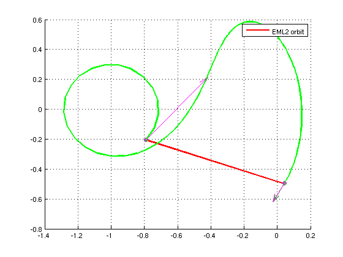

Contents
init;
N1 = 100;
N2 = 2;
N3 = 100;
inputType = cst.coord2.VNCSEM;
outputType = cst.coord2.VNCSEM;
dcs = cst.fwrk.VSEM;
quiverscale = 0.5;
The initial vector: 6 + 36 variables
y0 = zeros(42,1);
y0 = matrixToVector(y0, cst.orbit.STM0, 6, 6, 6);
Leg 2: manifold leg
y0(1:6) = [ -7.909020665016300e-01;
-2.057153010805557e-01;
0.000000000000000e+00;
2.397145759825049e+00;
2.699054245560647e+00;
0.000000000000000e+00];
t0 = 4.500955883493010e-01;
tf = 2.901236913163497e+00;
[tman, yman] = ode78_qbcp([t0 tf], y0, dcs, N2-1, inputType, outputType);
Target
yproj = [4.311933504764909e-02;
-4.935876996264280e-01;
0.000000000000000e+00;
-4.525820233983336e-01;
-7.947431930418852e-01;
0.000000000000000e+00];
Plot
figure(1)
hold on
grid on;
plot(yman(:,1), yman(:,2), 'Color', 'r', 'LineWidth', 2);
legend('EML2 orbit', 'Transfer leg', 'SEML2 orbit');
Warning: Ignoring extra legend entries.

We change the scope: everything is in one type now
inputType = cst.coord2.VNCSEM;
outputType = cst.coord2.VNCSEM;
dcs = cst.fwrk.VSEM;
Back to the problem of the manifold
t0 = 0.436887365666364;
tf = 2.96422997518981;
Copy initial values
ymd = yman;
tmd = tman;
ymd(end, 1:6) = yproj(1:6);
for k = 1: size(ymd, 1)
ymd(k,:) = matrixToVector(ymd(k,:), cst.orbit.STM0, 6, 6, 6);
end
Differential Correction
isTimeFixed = false;
[tmdn, ymdn, yma] = diff_corr_level_I(tmd, ymd, N2, dcs, inputType, isTimeFixed);
normC = 4.882155721038139e-03
normC = 4.548045129350309e-02
normC = 5.613831850388037e-04
normC = 2.373986142428344e-05
normC = 2.266345383578690e-08
normC = 2.875329510455332e-08
normC = 9.811524998737676e-09
normC = 2.050031257125998e-08
normC = 1.041910314313897e-08
normC = 3.350587013488994e-08
normC = 4.454057114352863e-08
normC = 1.520084979829384e-08
normC = 1.454037179998668e-08
normC = 4.944311719574509e-08
normC = 2.026997145654947e-09
normC = 4.243313235473493e-08
normC = 5.983733262416617e-09
normC = 1.630217944475279e-08
normC = 2.231387704844909e-08
normC = 2.975403611721808e-08
normC = 6.015021421528565e-09
normC = 5.595153471972731e-09
normC = 1.458378287774505e-08
normC = 3.123411372014753e-09
normC = 3.665664265328881e-09
normC = 7.387113497303285e-09
normC = 8.691546896493340e-09
normC = 1.130941083524060e-08
normC = 1.991586627294886e-08
normC = 3.320347572909723e-08
normC = 3.573062932693395e-08
normC = 2.343466086314440e-08
normC = 3.654769561719037e-08
normC = 6.748806138276639e-09
normC = 9.302284628457044e-09
normC = 1.985690110011608e-08
normC = 3.330358280484561e-08
normC = 3.567677030823400e-08
normC = 1.080170050919696e-08
normC = 2.541260910858503e-08
normC = 4.221775641414958e-08
normC = 4.019917669146921e-08
normC = 1.256183901805058e-08
normC = 2.211231658834640e-09
normC = 1.070587259475468e-08
normC = 3.858734801471161e-09
normC = 1.012883475789964e-08
normC = 5.211481212754570e-09
normC = 3.225522583010589e-09
normC = 2.958372429244423e-08

Compute the cost (DV, DT)
cr3bp = init_CR3BP('SUN', 'EARTH_AND_MOON', default);
gamma_i = 0.010078240625297;
DV = zeros(N2, 1);
for k = 1:N2
DV(k) = 1e3*cr3bp.L*2*pi/cr3bp.T*gamma_i*norm(yma(k, 4:6) - ymdn(k, 4:6));
ymdn(k, 4:6)
yma(k, 4:6)
end
DT = zeros(N2, 1);
for k = 1:N2
DT(k) = cr3bp.T/(2*pi*3600)*norm(tmdn(k) - tmd(k));
end
ans =
2.3972 2.6993 0
ans =
2.3971 2.6991 0
ans =
-0.4526 -0.7947 0
ans =
-0.4305 -0.8017 0